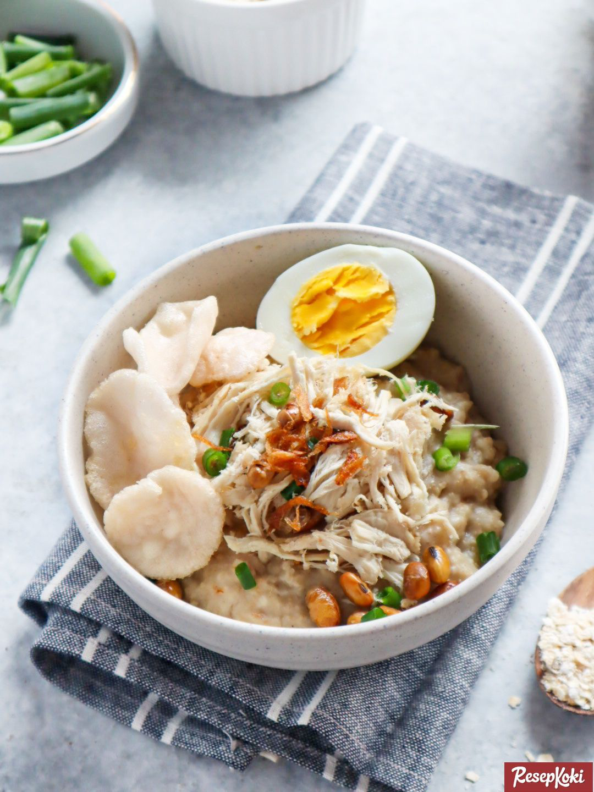

Bahan :
3 siung bawang putih, cincang
1/2 cm jahe cincang
1 batang daun bawang, iris kasar
150 g daging ayam, iris halus
300 g nasi putih
750 ml kaldu ayam
1/2 sdt merica bubuk
2 sdt garam
1 sdt minyak wijen
Pelengkap:
1 batang daun bawang, iris halus
3 sdm bawang merah goreng
3 butir telur ayam rebus, potong dua
Cara Membuat Bubur Ayam Sederhana :
Panaskan 3 sdm minyak, tumis bawang putih dan jahe hingga harum.
Masukkan daun bawang dan daging ayam, aduk hingga ayam matang lalu angkat.
Taruh dalam panci, tambahkan nasi putih dan kaldu.
Masak dengan api kecil hingga nasi menjadi bubur yang kental teksturnya.
Tambahkan merica, garam dan minyak wijen, aduk rata.
Angkat, sajikan hangat dengan pelengkapnya.
Kembali